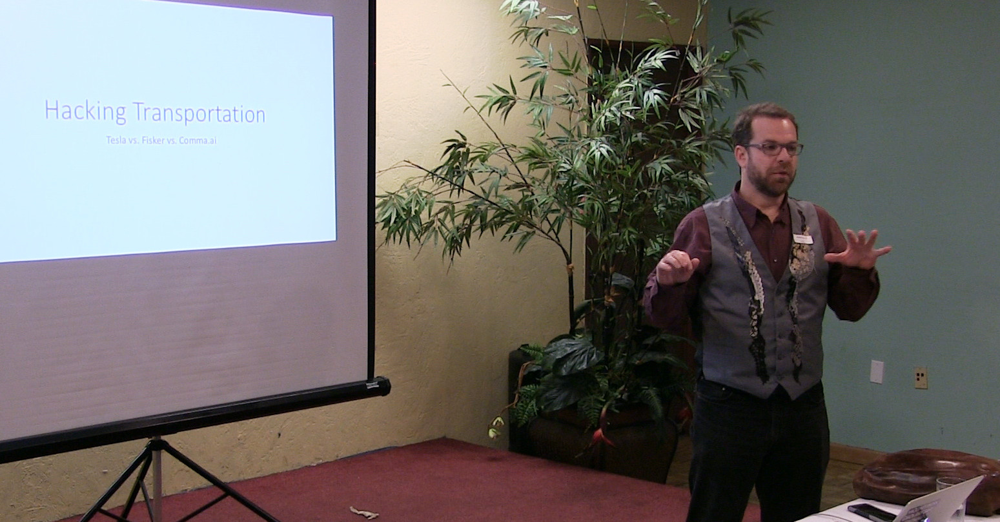

Andrew Boardman’s career began at seventeen when he wrote a text editor for BBS systems. At Carnegie Mellon University, he helped use genetic algorithms in groundbreaking research on programmatic stock trading.
After graduating from Colorado State University, with a CS major and Economics minor, he worked on desktop publishing software at Quark in Denver, CO. He then co-founded the consulting company WindBourne and eventually became its President.
After the dot-com bust he joined Microsoft, where he mostly worked on real-time communication products, and he was promoted to manager after one year. He worked on cutting edge products, as well as Office, Windows, in the developer division, and in MSN. Andrew was the lead developer for Windows Live Messenger.
He left Microsoft to co-found his second startup, TalentSpring, a recruiting company based on graph theory, where he learned many of the hard startup lessons.
Andrew then consulted with Seattle area startups before co-founding LearnVC.com. LearnVC accelerated entrepreneurs learning startup financing, empowering them to negotiate with the same information as VCs. They quickly pivoted to a SaaS capitalization table product.
 Andrew’s consulting practice currently includes competitive analysis, software and systems architecture, manager mentoring, product and project management, due diligence for financial deals, term sheet evaluation, and software development.
Andrew’s consulting practice currently includes competitive analysis, software and systems architecture, manager mentoring, product and project management, due diligence for financial deals, term sheet evaluation, and software development.